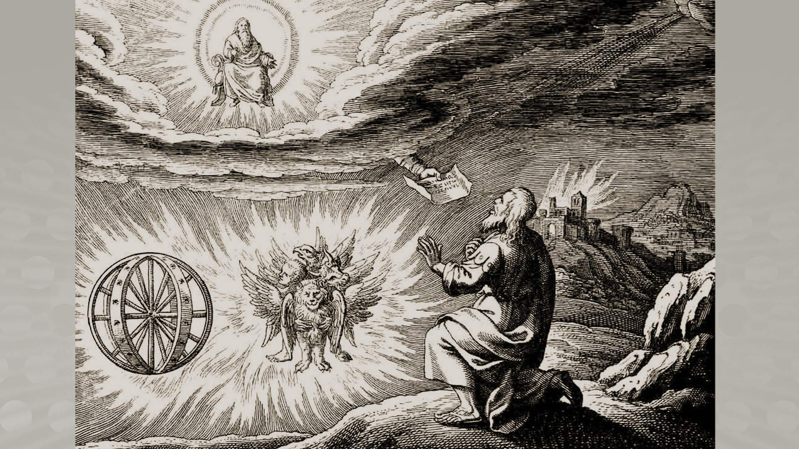
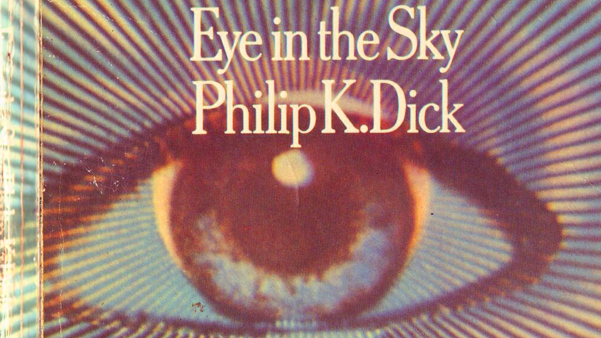

Chariots of the... WTF?
Feature - Adrian Reynolds, August 2021
In 2018, American writer Douglas Rushkoff was hired for a sum equal to half his professorial annual salary to give a talk. It seemed to be a biggish event for a select audience of the financially fortunate, eager for his thoughts on the future of technology. That's Rushkoff's beat: he has a deep and broad interest in how the world is changing, a key writer at the non-fiction end of cyberpunk since the genre's early days. His talk never happened. Instead, relaxing in the green room, Rushkoff was joined at a table there by five men, all working in the upper echelons of hedge funds.
The dicknocracy had questions. The writer's incisive and informed responses to relatively straightforward talk about bitcoin and AI made the penta-prong comfortable in its choice of advisor. They'd found their man.
The tone changed. What they were really curious about was how things would go after The Event. The nature of The Event wasn't anything they'd settled on. Maybe nuclear, maybe climate-related. The details didn't really matter. What concerned them was the likelihood of major social unrest in its aftermath.
It is time to save mother earth from her inhabitants.
The chaps who'd hired Rushkoff were preparing for Armageddon. Some - their friends too, if men like these have friends in the way most of us understand the term - had built bunkers and wanted to be sure they could protect them adequately. Could guards be trusted in the breakdown of the systems that make society function? Would it be appropriate for them to wear explosive collars? How long before robots could do the job?
In all of this, they'd managed to turn potential apocalypse into a bad Hollywood movie in which they'd be plucky survivors. The poverty of imagination is staggering. The assumption they'd be among the fortunate - if such a class exists in scenarios of this sort - was questionable. In any of the trashy Jean Claude Van Damme movies featuring this kind of testosterone doom these men would be the unquestioned villains of the piece. Same goes for Mad Max: Fury Road, which is very clear that unrestrained males imprinted with Milton Friedman's grabbernomic Pokemon philosophy - Gotta Catch 'Em All - are precisely where the problem starts. And potentially ends.
No amount of explosive collars could see off those determined to take the bastards down in their hideaways. And what kind of world would they be lords and masters of anyway? Exactly what about the state of the planet makes some of those who've profited from the acceleration of eco-collapse think they're living in a B-movie?
The Space Brothers have advanced information that they wish to impart to their weaker brethren.
Somewhere in all this we're seeing an interaction between ideas that have popped up in science fiction's more popular manifestations, and the world itself. We wouldn't have a mobile phone without the communicators in Star Trek serving as inspiration. And the diagnostic device Bones McCoy waved at patients to determine their illness is something engineers have been tinkering with for years, starting to find its way into the world in the form of apps. A shame then, that so many of the more visible manifestations of that drive to create the future are funded and sometimes fronted by - well, you've seen the bell-ended rocket Jeff Bezos went up in.
All this talk of the phallic is tricky to avoid given the very identifiable flying objects recently scuttering into low orbit thanks not just to Bezos but Elon Musk and Dick Branson. Maybe their thoughts really are on the future of humanity as they claim. Or perhaps they're worried about where enquiries about their links with Jeffrey Epstein may lead. Musk and Bezos dined with the procurer in 2011 at a TED Conference after he'd served a prison sentence in 2008 for soliciting sex from a 14 year-old girl. For Branson, Epstein was a near-neighbour, each with an island of their own celebrating its-a-knob-out hedonism. Oh, and PayPal's Peter Thiel is another Epstein acquaintance with plans for space - he just hasn't worked out how to get his up yet.
Listen, I'm sorry if the beauty of space and the prospect of humanity becoming a stellar species has been reduced to a mix of Playboy and Wacky Races. We deserve better than dastardly dicks. And it may yet happen. Or have already happened. Just not yet. If researcher Eric Wargo is to be believed, our concepts of time are out of kilter with their reality. Put another way, as science fiction writer Philip K Dick did in one of his titles, Time Out of Joint.
Jesus, Moses, Buddha, Mohammed and other religious leaders were really them.
In 1962, Dick wrote a novel featuring an android Abraham Lincoln. It was rejected by publishers initially, then published as We Can Build You in 1970. Back in 1964 Disney created an animatronic Lincoln that became a central feature of Disneyland by the time the book was out. Dick always felt there was something about his concept more than the coalescence of an emblematic figure from America's past and technology indicative of the future. By 1972 the writer lived not far from Disneyland and discovered that a woman living in his apartment building had the job every night of applying makeup to the robot president after visitors left. From a 1977 interview recounted in Wargo's Time Loops (2018):
"Well, let me ask you a question," I said. "You see this thing after the park is closed every night. How real does that thing seem to you to be?" And she says, "Well, I'll tell you exactly how real it seems to me to be." Now it's important to remember that every part of all the rides are continually scanned by closed circuit television. So anyway, she says, "One time I was painting the Lincoln thing and one of the monitors was still on. The guy on the screen saw me and reached over and pressed the controls. And the thing stood up."
"And what did you do, miss," I asked.
"I peed my pants."
"I take it that you found a high degree of verisimilitude in this simulacrum."
"Sure scared the shit out of me."
Close encounters of the turd kind are only to be expected when we're confronted with things behaving in ways we're led to believe they shouldn't. The most important part of the acronym UFO is the U for Unidentified. Without having a label that helps us know how to respond, we're a step or a glimpse away from uncharted territory. And in truth, always have been.

There's a big body of work out there trying to align passages in the Bible with purported alien craft - which is essentially an attempt to impose a contemporary form of the unknown onto former weirdness. One preferred instance is there in Ezekiel, Chapter 1, Verse 4:
And I looked, and, behold, a whirlwind came out of the north, a great cloud, and a fire infolding itself, and a brightness was about it, and out of the midst thereof as the colour of amber, out of the midst of the fire.
Later (Ezekiel 1.16), there's more detailed description of what's happening:
The appearance of the wheels and their work was like unto the colour of a beryl: and they four had one likeness: and their appearance and their work was as it were a wheel in the middle of a wheel.
And lo! Proponents of the idea that extra-terrestrials visit the Earth in spacecraft look at this and other passages and see evidence for their beliefs, shaped by immersion in science fiction in popular culture for decades.
How about instead we look at evidence that Biblical imagery appears in the modern world in unlikely ways - and in more interesting ways than those jokey news items about images of Jesus cropping up in the cheese of local pizza places. Welcome to the world of BVM (Blessed Virgin Mary) sightings.
I undertook specialist research as a way of using this popular cultural idea to lead people to the Gospel.
In May 1917 Lucia de Santos (10) and her cousins Francisca (9) and Jacinta Marto (7), tending to their sheep in Fatima, near Lisbon in Portugal, saw what they took to be lightning in a clear sky. Looking up, they saw what Lucia later described as a lady, clothed in white, brighter than the sun, radiating a light more clear and intense than a crystal cup filled with sparkling water lit by burning sunlight.
The lady pointed up and said she came from heaven, and for the girls to return with others, all the better to bring an end to the Great War through their prayers. And they did. Repeatedly. Fifty turned up next time, and thanks to what they witnessed more and more showed up for what the lady had said would be a final appearance in October of that year.
Tens of thousands showed up on that last occasion. And while an explanation for what unfolded might be elusive, it'd be hard to deny that something happened - with that damnable U once again. Trying to find a handy label would be tricky, and hold on to that thought since it connects whatever went on with the notion of tricksters in folklore and mythic shapeshifters. Here's a rundown:
- Many but not all present saw the sun dance, and its colours change. More than that, witnesses up to 25 miles away reported the same phenomenon.
- Damp clothes and muddy soil were dried by the heat of what was happening.
- Cures of blindness and lameness were reported.
The easy thing to do would be to say that it happened a long time ago, and those present were a self-selecting group of credulous worshippers. But what of journalist Avelino de Almeida, who'd written a satirical article about a previous session for the anti-religious newspaper O Seculo? Avelino stood by the truth of what he and thousands of others experienced in the October encounter despite the harsh criticism of peers.
Avelino's agnosticism is instructive. He went along as a sceptic and wrote as one but couldn't ignore what he was then part of. Words like mass hypnosis and group delusion don't actually explain what did or didn't happen. A true agnostic is the boy who sees the emperor has no clothes - someone who will report what they saw and heard and otherwise sensed regardless of whether it wins favour.
Naked emperors takes us back to Bezos and company of course. They see themselves as captains of the S.S. Enterprise but behave more like buccaneers minus the glamour, advocates of a form of capitalism that's laid waste to this planet and hope to profit by plundering others.
I knew all along they was people from other worlds up there. I knew all along. I never thought it would happen to me.
Better futures are available than the ones promised by men using space exploration as a form of Viagra. And maybe they start with paying more attention to a broader range of science fictions than those which imprinted on Bezos, Branson, and Musk. Women writers including Ursula le Guin, Octavia Butler, Joanna Russ, Nnedi Okorafor, and Margaret Atwood offer perspectives you won't find in tales of boys-and-their-toys. As does the work of Samuel R. Delany, Iain M. Banks, Liu Cixin, and William Gibson. Other new science fictional flavours can be explored in comic series including Saga by Brian Vaughan and Fiona Staples, and more titles published by Image such as Bitch Planet by Kelly Sue DeConnick and Valentine de Landro, and Tartarus by Johnnie Christmas and Jack T. Cole.
We need to think about UFOs and space travel in new ways, because existing ones have led us down some very dark paths in the last decades. Some of the uglier stories to have come out in the wake of post-WW2 ufology suggest America was spooked by a flying saucer faked by the Russians containing bodies of children mutilated to have the appearance of non-humans. And there's talk of America having done something similar.
Such depravity is nothing new. It's humans looking into darkness and seeing their reflections on shiny disks. Whether their stories are true or not put to one side for now. UFOs are a key part of the mythology of our times, and X-Files is just one of the fictions to have tapped into it.
An Irish fact has the wonderful Dalesque fluidity of a melting clock and the Joycean uncertainty of a rubber inch.
There's something else too, which goes back way before the era of television. It's there in the Fatima story, at least some UFO reports, that follows a worldwide trail of tales about the faery folk, by whatever names they're known where such yarns are told.
Jacques Vallee is most associated with uncovering the similarities between those encounters and wrote about them initially in his 1969 book Passport to Magonia. He noted that all cultures have stories about people who encounter beings that may or may not be humanoid in form, often in places they've stumbled on and perhaps been warned about where normal rules of how things work don't seem to apply. Time tends to be reliably unreliable in such experiences. You can think you've been gone an hour and discover on returning you were absent a week, or vice versa. You may be offered food - but don't take it. And don't expect to make much sense of what's happening, though the effects of your detour may stay with you positively or otherwise for the remainder of your days.
It's the intangible aspect of such experiences in liminal space that unites them. While they may include flying saucers and aliens, that often seems to be a projection on the part of the witness - contemporary window dressing for phenomena that in other times and places have been described with terms like faery rings, angels, and djinn.
Most scientists never look at UFO evidence, which leads to their conclusion that there is no evidence.
Annoyingly for some, this whimsical anything-goes cosmology seems to be supported by science of a deeper sort than Vallee's excellent work using field reports and a brain that didn't require him to need nuts and bolts. His reputation led to a character inspired by Vallee, played by Francois Truffaut, featuring in Spielberg's Close Encounters of the Third Kind.
I can assure you that flying saucers, given that they exist, are not constructed by any power on earth.
We're in a wibbly-wobbly place at this point. And we kind of always are. UFOs are a reminder of that fact, and that we have choice in how we perceive and respond to what we're presented with. Sometimes, going with the weirdness can be life-changing.

In the early 1970s Philip K Dick experienced seriously weird shit which he never figured out, and at various times considered might be telepathic contact with a Soviet espionage experiment, an alien intelligence, or - he had no shortage of theories. Among the information he was presented with in the comfort of his own head was data concerning his newborn son Christopher, revealing he had an undiagnosed birth defect requiring urgent surgery. Dick's wife Tessa communicated what her husband had been told to a doctor, who was able to confirm the facts on examination and perform an operation next day saving the boy's life - a story corroborated by several people including the doctor.
It was the darndest thing I've ever seen. It was big, it was very bright, it changed colors and it was about the size of the moon. We watched it for ten minutes, but none of us could figure out what it was. One thing's for sure, I'll never make fun of people who say they've seen unidentified objects in the sky.
Objectivity is out of the window. From mine I look past a lime green curtain and see an elder tree blowing in the breeze. The clouds are slate and cotton wool, and the smear of light that animates them is probably the sun.